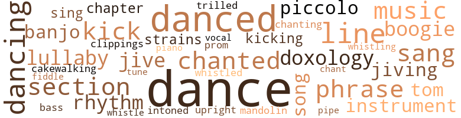
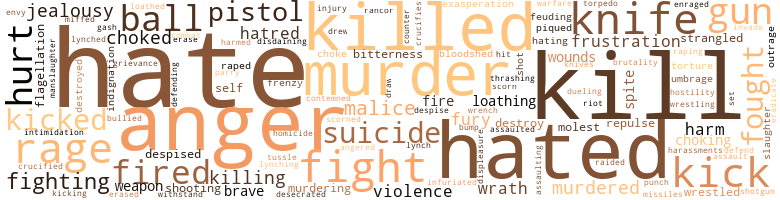

Book of Numbers (The), by Pharr, Robert Deane (1969)
92 music-related terms matched in this text.
Most frequent terms in this topic: dance (15); danced (7); dancing (4); chanted (3); music (3)
banjo.n.01
Definition: a stringed instrument of the guitar family that has long neck and circular body
| word | sentence |
|---|---|
| banjo | He a no-good banjo picker , dat man . . . " Dave stopped dressing to listen . |
| banjos | " And now the angels start plunking their damn banjos , " Cokey muttered , but Pigmeat was supremely triumphant . |
bass.n.07
Definition: the member with the lowest range of a family of musical instruments
| word | sentence |
|---|---|
| bass | In comparison to Georgia Brown Mae West was just another gal who beat the damn bass drum in the Salvation Army band . |
boogie.n.01
Definition: an instrumental version of the blues (especially for piano)
| word | sentence |
|---|---|
| boogie | And it would be a pleasure to drink up this dicty boogie 's likker and then turn him down cold . |
| boogie | He is the one boogie , on this earth , that refuses to be a phony . |
cakewalk.v.01
Definition: perform the cakewalk dance
| word | sentence |
|---|---|
| cakewalking | Still cakewalking , they kicked in unison on his door . |
chapter.n.01
Definition: a subdivision of a written work; usually numbered and titled
| word | sentence |
|---|---|
| chapter | The local chapter of the fraternity had selected the Club Babylon as the downtown unofficial headquarters of the convention . |
clipping.n.01
Definition: an excerpt cut from a newspaper or magazine
| word | sentence |
|---|---|
| clippings | Another nearby banker , who had once been referred to in his local colored paper as " a local sportsman , " believed his clippings , and spent all his spare time hunting and fishing in the company of wealthy professional men whom he showered with expensive favors and gifts . |
dance.n.01
Definition: an artistic form of nonverbal communication
| word | sentence |
|---|---|
| dance | " Let 's dance , David . " |
| dance | What part was he supposed to play in this mad dance ? |
| dance | It was a gesture that made Blueboy look as if he was going into a buck and wing dance , only he would turn with his knees slightly bent and thrust his hand deep into his pocket , miming an illusion that he was reaching into a bottomless cornucopia . |
| dance | " The bankbook is lying upstairs in a drawer like an old dance program . |
| dance | If you go to a dance dey figger dat you is using money dat rightly belongs in de collection plate . |
| dances | " They still got dances in this town , do n't they ? " |
| dance | Behind Blueboy came Makepeace , all two hundred and fifty pounds of him , doing a graceful version of the latest dance craze called Truck - ing . |
| dance | Flick was apparently afflicted from head to toe with a horrible St. Vitus dance . |
| dance | To the indifferent observer , Reverend Simms was just another dapper little white guy who more than likely was a fair-to-middlin ' song and dance man . |
| dance | " Get high all over again and go in the front room and dance , " Pigmeat said . |
| dance | They were still doing their slow , dragging dance , and he held her very tight . |
dance.v.02
Definition: move in a pattern; usually to musical accompaniment; do or perform a dance
| word | sentence |
|---|---|
| dancing | Someone pressed a drink in his hand , and in no time at all he was dancing and talking and accepting the Ward 's hospitality as if Kelly Simms had never happened to him . |
dance.v.03
Definition: skip, leap, or move up and down or sideways
| word | sentence |
|---|---|
| danced | They danced like copulating monkeys . |
| danced | They danced and drank sociably in the front room . |
| danced | She had never danced before ; never necked before ; been in the company of an intoxicated man before ; and never had she courted the wrath of God before . |
| danced | His withered hand danced crazily . |
| danced | The two young men danced like savages all over the room , then locked arms and did a cakewalk over to Blueboy 's room . |
| danced | Their fingers danced over the keys of the machines . |
| dance | At his first party , the daughter of a midwestern undertaker had grabbed him and insisted that he dance with her . |
| dancing | Blip gestured toward the lissome Kelly , now dancing eccentrically with a schoolboy . |
| dancing | Although there were several couples dancing to the music of a radio that someone had brought in , Dave judged the occasion to be a reception rather than a party . |
| dance | Dave wanted to hear more about the poor whore in East St. Louis , but , lamblike , he accepted , and they began to dance sedately . |
| dancing | The three of them trooped into the front room to join Lila , and a little later were all dancing to slow romancing records . |
| dance | Just before they all started to dance the most cataclysmic event in Dave 's life took place , and none of the four were conscious of it at the time . |
| dance | Lila 's calm statement that she did not know how to dance aston - ished Dave , who had always taken it for granted that all Negroes darker than himself were born dancing . |
| dance | His astonishment was com - pounded when Lila also simply stated that although she had never tried to dance , she would now try if Dave so wished her to try . |
| danced | They danced a step called the Slow Drag . |
doxology.n.01
Definition: a hymn or verse in Christian liturgy glorifying God
| word | sentence |
|---|---|
| doxology | " Now was n't that a lovely doxology ? " |
| doxology | " Now doxology is a beautifully sonorous word , ai n't it ? " |
jive.v.01
Definition: dance to jive music; dance the jive
| word | sentence |
|---|---|
| jiving | Then she starts jiving that I 'm s ' pose to be the friendliest guy in the Ward , and ai n't I afraid of ruinin ' my reputation , and stuff like that there . |
| jiving | Pigmeat could be standing at your table , talking a mile a minute , and all at once dart off to wait on a guest , jiving and kidding with him all the time , but when she returned to you , she would pick up the conversation exactly where she had left it . |
kick.v.04
Definition: kick a leg up
| word | sentence |
|---|---|
| kicking | Cokey heard the body hit the ground and then he saw the cop kicking Blueboy in the pit of the stomach . |
| kick | And since theirs was a love without reserva - tions , she could no more imagine Dave complaining abut the money she spent than she could imagine herself complaining if Dave took a sudden notion to kick her down the stairs . |
| kick | This idea of being without a drink infuriated Dave so he tried to kick Cokey 's front door down , but all he did was hurt his toe . |
| kick | " You kick a lonely whore in the butt , she wo n't like it , but if she 's lonely she 's got ta return . " |
lullaby.n.01
Definition: a quiet song intended to lull a child to sleep
| word | sentence |
|---|---|
| lullaby | His strong arms were like a lullaby to Pig 's troubled thoughts . |
| lullaby | " Hush , Kelly , hush , " he murmured like a lullaby and held her tightly in his arms . |
mandolin.n.01
Definition: a stringed instrument related to the lute, usually played with a plectrum
| word | sentence |
|---|---|
| mandolin | The Rhode Island Red prefers the mandolin to the banjer but like his darker brethren , he is partial to knives , gaffs and sundry bloodletting instruments . |
music.n.01
Definition: an artistic form of auditory communication incorporating instrumental or vocal tones in a structured and continuous manner
| word | sentence |
|---|---|
| music | Although there were several couples dancing to the music of a radio that someone had brought in , Dave judged the occasion to be a reception rather than a party . |
| music | The damn things were always in these parlors with sheet music opened at the ready , but rarely with anyone in the house who could play them . |
| music | It was exactly what its name implied : slow , dragging steps in time to the music . |
musical_instrument.n.01
Definition: any of various devices or contrivances that can be used to produce musical tones or sounds
| word | sentence |
|---|---|
| instruments | The Rhode Island Red prefers the mandolin to the banjer but like his darker brethren , he is partial to knives , gaffs and sundry bloodletting instruments . |
| instrument | Most of them claimed that I was treating myself for a venereal disease ; others thought that it was an instrument used to give myself an abortion , and still others claimed that I used it for masturbating . |
phrase.n.02
Definition: a short musical passage
| word | sentence |
|---|---|
| phrase | " Now there 's a happy phrase . |
| phrase | When the more violent pressed an attack on the ramparts of her intellect , she would ingeniously counterattack with a phrase of lore from the mind of her husband . |
| phrase | He paused to note if Dave appreciated that happy phrase . |
piano.n.01
Definition: a keyboard instrument that is played by depressing keys that cause hammers to strike tuned strings and produce sounds
| word | sentence |
|---|---|
| piano | There was a jukebox , but a faggot played the piano and sang most nights . |
piccolo.n.01
Definition: a small flute; pitched an octave above the standard flute
| word | sentence |
|---|---|
| piccolo | We are still in our infancy so to speak , but you just wait ; Davey-boy loves wine , women , and a nickel in the piccolo better 'n most . |
| piccolo | " Change that into quarters and put 'em in the piccolo . |
pipe.n.04
Definition: a tubular wind instrument
| word | sentence |
|---|---|
| pipe | " Oh , pipe down and let 's get a move on . |
promenade.n.01
Definition: a formal ball held for a school class toward the end of the academic year
| word | sentence |
|---|---|
| prom | Flick was silent for a few minutes before he said , " We were juniors , and it was some kind of winter prom . |
rhythm.n.04
Definition: the arrangement of spoken words alternating stressed and unstressed elements
| word | sentence |
|---|---|
| rhythm | Dave knew he would have to play it by ear until he caught Blueboy 's rhythm . |
| rhythm | Lila had a good sense of rhythm and it was very nice dancing with her . |
section.n.01
Definition: a self-contained part of a larger composition (written or musical)
| word | sentence |
|---|---|
| section | " There 's only one section of this city for a man in the sportin ' life and that section is called the Ward , " Dave said . |
| section | As soon as they reached the colored section they stopped in an all-night joint for a cup of coffee . |
| section | " Makepeace , that whole section of town is finished , so that means the beginning of something else . |
sing.v.02
Definition: produce tones with the voice
| word | sentence |
|---|---|
| sing | The three buddies continued to sing praises unto Pigmeat Goins . |
| sang | "' Tai n't like the day and ' tai n't like the night , " she sang . |
| sang | There was a jukebox , but a faggot played the piano and sang most nights . |
| sang | You want two ham sang - widges ? " |
song.n.01
Definition: a short musical composition with words
| word | sentence |
|---|---|
| song | Of course there was the song of that title , but . . . " Jawja Gal , how much pork you toting this year ? " |
| song | To the indifferent observer , Reverend Simms was just another dapper little white guy who more than likely was a fair-to-middlin ' song and dance man . |
swing.n.05
Definition: a style of jazz played by big bands popular in the 1930s; flowing rhythms but less complex than later styles of jazz
| word | sentence |
|---|---|
| jive | " So that 's where you get that jive ? " |
| jive | Some jive . " |
tenor_drum.n.01
Definition: any of various drums with small heads
| word | sentence |
|---|---|
| tom-toms | Just as if the Ward 's telegraphy was not swifter than tom-toms and silent . |
tone.v.01
Definition: utter monotonously and repetitively and rhythmically
| word | sentence |
|---|---|
| chanted | . . . " Randy chanted . |
| intoned | " Reverend Taylor , Mr. Johnson , " Blueboy intoned . |
| chanted | Fight with all your might ! " she chanted . |
| chanting | Kelly was still chanting . |
| chant | The crowd began to chant : " Git back . |
| chanted | " No women , " they chanted in hysterical repetition . |
tune.n.01
Definition: a succession of notes forming a distinctive sequence
| word | sentence |
|---|---|
| strains | The first and only fruit of this mysterious union was a girl who from the day of her birth gave signs of being a glorious mixture of many racial strains . |
| lines | " That 's Kelly 's part ; you just say your lines . |
| line | Dave could not guess , but one thing for sure : Georgia and Blueboy were a two person receiving line . |
| lines | They stood around in dull , lifeless groups , almost mouthing their lines correctly , but it was evident that these maniacs did not have the slightest idea of what they were saying or doing . |
| tune | He stomped out of the kitchen , and a few moments later the three young people heard him go up the stairs , whistling a happy tune . |
| line | When at last he reached his place in line , he wearily deposited the tub on the floor and sat down on it . |
upright.n.02
Definition: a piano with a vertical sounding board
| word | sentence |
|---|---|
| upright | The little man bolted upright and transfixed Dave with a deadly stare . |
violin.n.01
Definition: bowed stringed instrument that is the highest member of the violin family; this instrument has four strings and a hollow body and an unfretted fingerboard and is played with a bow
| word | sentence |
|---|---|
| fiddle | He must have been born to play second fiddle whenever it came to being the life of the party . |
vocal_music.n.01
Definition: music intended to be performed by one or more singers, usually with instrumental accompaniment
| word | sentence |
|---|---|
| vocal | She loved to read and this quirk in her personality amused , confused and at times , disgusted Pigmeat who believed in all things vocal . |
warble.v.01
Definition: sing or play with trills, alternating with the half note above or below
| word | sentence |
|---|---|
| trilled | " Good morning , Mr. Harris , " she trilled . |
whistle.v.01
Definition: make whistling sounds
| word | sentence |
|---|---|
| whistled | Blueboy whistled admiringly . |
| whistling | He stomped out of the kitchen , and a few moments later the three young people heard him go up the stairs , whistling a happy tune . |
| whistle | The occasional shrill of a police whistle heightened the excitement , and the crowd gradually began to take on a holiday air . |
455 violence-related terms matched in this text.
Most frequent terms in this topic: hate (31); kill (24); hated (19); anger (19); murder (16)
abhor.v.01
Definition: find repugnant
| word | sentence |
|---|---|
| loathed | He loathed the way he had spent the night loving her - only to turn his back on her in the morning . |
abhorrence.n.01
Definition: hate coupled with disgust
| word | sentence |
|---|---|
| loathing | That which had in the beginning amused him , and then mildly appalled him , now became the object of his loathing . |
| loathing | In time Dave expanded his loathing to include the group of men that Blueboy gathered around it nightly . |
| loathing | At this very moment there was bom in Dave a loathing for the counterfeit and the makeshift that would goad him the rest of his days . |
aggravation.n.01
Definition: an exasperated feeling of annoyance
| word | sentence |
|---|---|
| exasperation | He breathed with exasperation as he looked at his watch ; he had a date to keep in less than an hour . |
| exasperation | Blueboy expelled his pent-up breath in exasperation . |
anger.n.01
Definition: a strong emotion; a feeling that is oriented toward some real or supposed grievance
| word | sentence |
|---|---|
| anger | Drained of anger , he dully did her bidding . |
| anger | In his anger he cursed Pigmeat . |
| anger | When he saw her go up on her front porch and enter the house he snorted in relief and new-found anger . |
| anger | He countered this with anger at his own weakness and a blind determination to make the jobs in his operation the best jobs a Negro could get in the city . |
| anger | Pigmeat 's anger gave way to a sad stillness . |
| anger | To inform this man of the true facts of life might anger him , Delilah thought , and so she said , " Ah doan got no refrunces . " |
| anger | Pain doubled his anger , and he yelled curses up at the second-floor windows where Cokey lived . |
| anger | The two syllables dribbled sloppily , profanely from her lips , filling Dave with a white-hot anger . |
| anger | But the idiocy of this venture filled Makepeace with a shame that soon turned to anger . |
| anger | Kelly was so disappointed to find Dave a man like this that her fright turned again to hysterical anger . |
| anger | Suddenly her anger vanished and she was once more enervated and defeated . |
| anger | Her anger disarmed Dave completely . |
| anger | As his delayed anger rose , Dave suddenly knew why he had felt doomed the first time he glimpsed her . |
| anger | The Ward 's social slights rankled ; and the fact that he and Blueboy were often hosts at Booker 's Square Table to male members of the city 's black elite served to further goad Dave 's anger . |
| anger | Dave almost choked in his anger . |
| anger | Whether the man 's voice was trembling from anger or exertion Dave did not know , but the Colonel sounded as if he had been running . |
| anger | Her voice broke completely and she cried out in anger : " It 's a goddam shame to make a real man sit and suffer the bites of gnats . |
| anger | And she could have returned every holiday and summer vacation , he re - flected in cold anger . |
| anger | Pigmeat was agitated with an emotion that was the nearest she possessed to anger . |
anger.v.02
Definition: become angry
| word | sentence |
|---|---|
| angered | Dave was also sure that Delilah huffed him , and it always angered him when he thought so . |
assail.v.01
Definition: attack someone physically or emotionally
| word | sentence |
|---|---|
| assaulting | They latch onto the younger among the arriving waiters , assaulting them with questions , cajolery , and their own brand of super-sales talk . |
| assaulted | John Brown , Gordon Penn , Tony Bailey , and Arthur Gardin , numbers writers , were all feloniously assaulted by violently intoxicated numbers players who mistakenly believed that they had hit the number . |
bloodshed.n.01
Definition: the shedding of blood resulting in murder
| word | sentence |
|---|---|
| bloodshed | " Now who 'd a thought that a simple little trick like that would save you a world of trouble and bloodshed ? |
| bloodshed | It became necessary for Dave to divide the entire city into recognized areas for the pickups , and in some cases to subdivide it for the more aggressive writers in order to prevent bloodshed . |
bullying.n.01
Definition: the act of intimidating a weaker person to make them do something
| word | sentence |
|---|---|
| intimidation | And that was Lila 's form of intimidation . |
bump.n.01
Definition: a lump on the body caused by a blow
| word | sentence |
|---|---|
| bump | He entered the cab so hurriedly that he received a sharp bump on his head from the door frame . |
contemn.v.01
Definition: look down on with disdain
| word | sentence |
|---|---|
| disdaining | Dave went straight to the bathroom , disdaining to glance at the bed . |
| contemned | He disliked the idea of the new faces even if he had contemned the old . |
| scorn | The object of Eggy 's scorn was a tall , bronzed rather than brown youth . |
| despised | He was the crassest of fools , and he despised his obtusity with all his might . |
| despised | Dave could elaborate further if only Blueboy would let him , but Blueboy loved the table as much as Dave despised it . |
| despise | Greene 's Farm ? " the caller asked in the clipped accents that Dave knew so well and had come to despise . |
| scorned | These two silly old men , these two whom the table sometimes scorned , had jumped , unbidden , to defend their young . |
counterpunch.n.01
Definition: a return punch (especially by a boxer)
| word | sentence |
|---|---|
| counter | At ten each morning , Eggy would lean on the serving counter for a breather . |
craze.n.02
Definition: state of violent mental agitation
| word | sentence |
|---|---|
| frenzy | The threat sent him into a frenzy of panic . |
| frenzy | The mere whisper of a surprise party or shower was sufficient to send her into a frenzy of prearrangements . |
crucify.v.01
Definition: kill by nailing onto a cross
| word | sentence |
|---|---|
| crucified | They were in abundance at all the affairs , and they had joyfully crucified Cokey . |
| crucifies | " The Negro in his ignorance crucifies someone every day . " |
cut.n.05
Definition: a wound made by cutting
| word | sentence |
|---|---|
| gash | He never hit Dave , but one pool ball did crack the wrist of the first man who flashed a knife , and the speed of the ball carried the knife to Dave 's cheek , leaving an ugly gash , while breaking the man 's bone . |
defy.v.01
Definition: resist or confront with resistance
| word | sentence |
|---|---|
| withstand | If only he could become a bosom friend of Blueboy he knew he could withstand any and all ostracism . |
desecrate.v.01
Definition: violate the sacred character of a place or language
| word | sentence |
|---|---|
| desecrated | To Dave , the flat voice , with an accent so thick that it was a caricature of a Negro dialect , desecrated her pretty mouth and perfect teeth . |
destroy.v.04
Definition: put (an animal) to death
| word | sentence |
|---|---|
| destroy | After all , a four-doliar hit would destroy his bank before they got off the ground . |
| destroy | What goddam right did she have to destroy her beauty with alcohol ? |
| destroyed | And Kelly 's mouth breathed in his ear , " I feel just like the whole damn world has been destroyed and only you and I are left , lover . |
| destroyed | The parishioners often brought gifts of toys to the parsonage , which the man destroyed immediately . |
displeasure.n.01
Definition: the feeling of being displeased or annoyed or dissatisfied with someone or something
| word | sentence |
|---|---|
| displeasure | Didi was far too engrossed in her self-appointed task to note Dave 's displeasure and so she talked on without pause until she had worked herself into a wonderful state of moralistic wrath at all lustful women . |
draw.v.23
Definition: pull (a person) apart with four horses tied to his extremities, so as to execute him
| word | sentence |
|---|---|
| drew | When the hearse drew up in front of the house , word was passed all over the Ward . |
| draw | " He think he de only one know how to draw up a pettishun . . . and he ai n't no lawyer no way . |
duel.v.01
Definition: fight a duel, as over one's honor or a woman
| word | sentence |
|---|---|
| dueling | Kootchie had stopped dueling with Blueboy , and they now were busy talking about old times . |
eliminate.v.03
Definition: kill in large numbers
| word | sentence |
|---|---|
| eradicate | I will do all in my power to eradicate it , but please do not ask me to forgive it . |
enrage.v.01
Definition: put into a rage; make violently angry
| word | sentence |
|---|---|
| enraged | Very often her competence enraged him , and some days it seemed as if his hand was constantly in Lila 's face , spitefully punishing her for her efficiency . |
envy.n.01
Definition: a feeling of grudging admiration and desire to have something that is possessed by another
| word | sentence |
|---|---|
| envy | They had to be good friends , Dave observed with a twinge of envy . |
erase.v.01
Definition: remove from memory or existence
| word | sentence |
|---|---|
| erased | I 'm gon na let each writer bring in his pads of today 's work , and if the tissue is clean-looking , not tampered with or erased , looks on the level , we 'll pay him . |
| erase | Even in her fright she would have willingly died to erase that name from Dave 's eyes , but she was powerless in her fear of a higher power than Dave Greene . |
ferociousness.n.01
Definition: the trait of extreme cruelty
| word | sentence |
|---|---|
| brutality | It would have been a whole lot smarter to have brought a lawyer along , but this was a race between Blueboy 's mouth and brutality . |
feud.v.01
Definition: carry out a feud
| word | sentence |
|---|---|
| feuding | " What you and my Baby Sister feuding about , Chiefy ? " |
| feuding | A little later she asked , " What are you feuding with Pigmeat for ? |
fight.n.02
Definition: the act of fighting; any contest or struggle
| word | sentence |
|---|---|
| combat | Five minutes later they were locked in a bloody verbal combat that lasted until daybreak . |
| fighting | Courage do n't necessarily mean fighting . |
fight.n.05
Definition: a boxing or wrestling match
| word | sentence |
|---|---|
| fight | The crumbiest pimp on earth could keep two whores from fight - ing , but sorry-assed Dave Greene could n't keep a slick little Geechie and a college bred genius from killing each other . |
| Fight | Fight ! |
| Fight | Fight with all your might ! " she chanted . |
| fights | As a grade school pupil he had won Ms share of scuffles and fist fights , but fighting was not atMetics , in Dave 's opinion . |
| fight | There on the street corner the two complete strangers engaged in a murderous knife fight . |
| Fight | Like The Black Investor , White Capital and Black Labor , Brown America and Its Dollar , The Black American 's Fight for the White Man 's Dollar . |
| fight | Their lives are dedicated to the proposition that every man alive has but one fiendish desire and that is to bed them , and in their imaginations they love to put up the good mental fight to preserve their doubted virginity . |
| fight | " Was n't no fight and it was a hunnert miles from here , up in de mountings , " the Colonel was saying . |
fight.v.02
Definition: fight against or resist strongly
| word | sentence |
|---|---|
| fought | Lila was a worthy foe , and no woman fought like this without good reason . |
| fought | " You men ridicule him and call him a Geechie ; but his is the only racial grouping in America today which has not only fought for , but has succeeded in maintaining his racial purity against all odds . |
| fought | " They fought something turble . |
| fight | " Well , anyhow , " Dave said , " you and Blueboy can fight it out to see who is gon na be the best man this Thanksgiving . " |
| fight | " Thirty thousand coons in this city and only one lousy block for them to fuss and fight on . |
| fight | She does not fight with a razor , but , once she loses her temper , she will throw anything that comes to hand , be it a vessel of boiling water or a bunch of magnolia blossoms . |
| fought | After that three men rushed Dave , and he went down under their flailing cue sticks , but Dave fought on in an attempt to destroy all three of his attackers . |
| fight | He 'll take and fight his ass off if you get him mad enough . " |
| fighting | As a grade school pupil he had won Ms share of scuffles and fist fights , but fighting was not atMetics , in Dave 's opinion . |
| fighting | Didi and Becky were fighting someone . |
| fighting | The person they were fighting did not have a familiar voice , but that voice painted her clearly in Dave 's mind . |
| fighting | " Georgia 's girls are fighting somebody and they want in . " |
| fought | Robert E. Lee had fought a losing battle for a cause which he did not believe in , but his name would live forever in history . |
| fighting | " Get mad and start fighting ? " |
| fight | And one day the NAACP might wake up and find out that it would be real smart for them to fight for the right for niggers to sell things to niggers . |
| fight | No American Negro has ever felt the need to climb a mountain or fight a bull ; why should he yell at the waves in the ocean of fate ? |
| fight | And so it now becomes his duty to fight to preserve it . |
| fight | What you really wish is that we had a more respectable business to fight for . |
| defend | Who the hell they gon na defend any - how ? " |
| defending | If a Negro lawyer was not interested in defending gamblers , knew noth - ing of the numbers racket , was entirely ignorant of the only business in America that was open to every enterprising Negro , then what the hell was he good for ? |
| fought | One half of him fought to remain seated and quiet , the other half of him was now in a foam - mg rage . |
| fought | He had fought against this moment since the day they met . |
| fighting | Not for income tax ; not for fighting ; not for being unwise . |
frustration.n.03
Definition: a feeling of annoyance at being hindered or criticized
| word | sentence |
|---|---|
| frustrations | Dave 's frustrations - which he kept secret even from Blueboy - began to bother him more and more . |
| frustration | Dave was pricked by an angry frustration . |
| frustration | Her arrogant smile dissolved Dave 's feeling of utter frustration . |
| frustration | His shoulders drooped in frustration and of despair . |
fury.n.01
Definition: a feeling of intense anger
| word | sentence |
|---|---|
| rage | He grudgingly admired her even while his rage went unabated . |
| Fury | Fury , love , and despair coiled like three serpents in his stomach . |
| fury | But the very idea of Lila harming Kelly filled Dave with a murderous fury . |
| fury | Dave came back to this world filled with bloody fury . |
| rage | A sudden rage distorted Dave 's face . |
| rage | They were a blend of rage , hysteria , and something that was both savage and desperate . . . jungle abominations . . . sadistic atrocity ... it was all there in their voices . |
| rage | He stared down the table in rage , feeling once more that he was surrounded by idiots full of sound , but minus the fury to live like men . |
| fury | He stared down the table in rage , feeling once more that he was surrounded by idiots full of sound , but minus the fury to live like men . |
| rage | Then even in his rage his curiosity got the better of him and he turned to Dave . |
| rage | Dave swelled with rage , but Flick did not notice . |
| rage | One half of him fought to remain seated and quiet , the other half of him was now in a foam - mg rage . |
| rage | In his rage Dave forgot all about the preservation of his bank . |
| rage | He stood up , ready to charge to the front of the court but some slimey blob of sanity in the depths of his rage told him to walk to the rear of the court . |
| rage | But at least Kelly knew he had a right to cry with rage . |
| rage | Dave 's voice was choked in a rage of indecision . |
| rage | She quickly shut the door in his outraged face , but Dave managed to temper his rage by telling himself that Pig 's accusations were a natural result of the jealousy of the Vessey Street chick for the Campus girl . |
| rage | Her eyes caught fire with the light of pure rage . |
| rage | Extro - verted , profane , materialistic , and possessing vast capacities for both rage and compassion , this unholy group seized upon the innocent Kelly and proclaimed her to be their own personal property . |
| rage | Neither made a sound for fear of attracting Cokey and Pigmeat , although Dave 's rage was murderous . |
gag.v.06
Definition: cause to retch or choke
| word | sentence |
|---|---|
| choking | " Do n't you think she needed me when that guy was choking her to death ? " |
| choking | Cokey was seized with a fit of choking . |
| choke | And I hope you choke on your black thoughts . " |
| choking | Dave was seized with a fit of choking . |
| choke | He sat and watched , hoping that she would choke , gag , stop and beg for water . |
| choked | And his voice was gruff and choked . |
| choked | " Damn right , " Dave said in a voice half choked with emotion . |
| choked | Dave almost choked in his anger . |
| choked | Dave gawked and Blueboy choked . |
| choked | Dave 's voice was choked in a rage of indecision . |
grudge.n.01
Definition: a resentment strong enough to justify retaliation
| word | sentence |
|---|---|
| grievance | " ' Tai n't fair and I 'm gon na say this right here and now : that man is a disgrace and we orta get up a grievance committee . |
gun.n.01
Definition: a weapon that discharges a missile at high velocity (especially from a metal tube or barrel)
| word | sentence |
|---|---|
| guns | " Those cops had guns with bullets in them . |
| gun | Dave stepped back and raised the gun to point at Lila 's heart . |
| gun | In this position they both wrestled for possession of the gun . |
| gun | They pulled and tugged for a long time , Delilah using all the muscle in her shoulders to try to twist the gun out of Dave 's hand , but he was too strong for her . |
| gun | Dave took a lunging step backward , but now Delilah was part of the gun and her frail weight came back with it . |
| gun | Lila landed on his legs and wondered why the gun had n't exploded . |
| gun | Panting and straining , Lila felt the muzzle of the gun pressed into her breast , but she never relaxed in her determination to straighten out her body completely , thereby breaking Dave 's grip on the gun . |
| gun | Panting and straining , Lila felt the muzzle of the gun pressed into her breast , but she never relaxed in her determination to straighten out her body completely , thereby breaking Dave 's grip on the gun . |
| gun | Tears ran from his eyes as he released the gun . |
| gun | Lila came down on her face , but with all her might she threw the gun down the darkened hallway . |
| gun | She 's mad because I do n't grab a machine gun and take over police headquarters . " |
harassment.n.01
Definition: a feeling of intense annoyance caused by being tormented
| word | sentence |
|---|---|
| harassments | Randy told Blueboy not only of his plight with the box , but of all the dozens of minor harassments fostered upon him by Elks who wanted to play all sorts of foreign ways . |
harm.v.01
Definition: cause or do harm to
| word | sentence |
|---|---|
| harm | " I would n't harm a hair on his poor head . " |
| harmed | You never harmed a hair on his head . |
hassle.n.02
Definition: disorderly fighting
| word | sentence |
|---|---|
| tussle | Even the struggle at the door of Dave 's house seemed now to have been no more than a friendly tussle . |
hate.n.01
Definition: the emotion of intense dislike; a feeling of dislike so strong that it demands action
| word | sentence |
|---|---|
| hatred | Lila was well aware of her father 's hatred for Jonesville and did not have the slightest intention of going there , but she was more than willing to come to the city and the Ward . |
| hate | One has a sneaking suspicion that these Negroes have a mortal fear and hate for all that is pleasant . |
| hate | " Ah doan hate yo , Dabe . |
| hatred | He stared at her with pure hatred in his eyes . |
| hate | As he sat there and fluctuated between hate and what once was love he studied her drawn face and saw that her lips were still undaunted . |
| hatred | This deceit never conflicted his sense of honesty or hatred for the sham . |
| hatred | The only thing that holds the Negroes together to a certain extent is the white man 's hatred of him . |
hate.v.01
Definition: dislike intensely; feel antipathy or aversion towards
| word | sentence |
|---|---|
| hated | Then too , some race-hating Negroes might have migrated to these predominantly black islands during , or just before Reconstruction days in order to escape daily contact with the hated white man . |
| hate | James even came to hate the few brown-skinned natives of Jonesville . |
| hate | " You really must hate me if you ca n't stand to have me touch you . " |
| hated | This Nordic - looking Negro was the epitome of so many things Dave hated that it was really inconceivable that the two could ever really be friends . |
| hate | " The only thing I hate is that you wo n't ever be able to come back to the University here . |
| hate | " I know why you hate me , Mommy . " |
| hated | Eggy hated to say yes to this floater who definitely wanted something for nothing , but the only thing Eggy loved more than whiskey was free whiskey . |
| hated | He hated all mankind ; for all men hated Kelly Simms because they could n't screw her . |
| hated | He hated all mankind ; for all men hated Kelly Simms because they could n't screw her . |
| hated | And he hated Kelly . |
| hates | A Vessey Street chick professes ignorance of the existence of any and all Vessey Street chicks , and she hates them . |
| hates | She hates and fears housework , leaving all domestic situations to her darker unfortunates . |
| hate | I do n't mean the clerks . . . They 're gon na be jealous and hate you - like poor trash should . |
| hated | " The holy bastard loved colored wimmin so much he hated the nuts off nigger men . |
| hated | He hated poor people and said so . |
| hated | Dave , who at times feared and hated the table , never tired of telling its " true history . " |
| hates | He even hates the temporary . |
| hate | I hate white people too much . |
| hate | And he found it was easy to hate Delilah ; this was all her fault anyhow . |
| hating | It had been pleasant hating Delilah and her whole dizzy sex ; Blip was intruding on his miserable pleasure . |
| hate | I hate 'em all , the dizzy bitches . " |
| hating | " He ... he works for me , " Dave explained , hating the way his words sounded . |
| hate | Dave 's utter contempt for those who could not finish what they started made him hate Kelly . |
| hate | He began to hate himself . |
| hated | They hated to do it . |
| hated | They just hated to fail me , but they had no choice in the matter . |
| hate | He eventually came to hate his father . |
| hate | " I hate to think of starting back to work , " she said . |
| hated | In view of the fact that Dave both hated and shunned politics it is ironic that his stature in the Ward so nearly approximated that of a big-city political boss . |
| hated | " Educated colored hated us for joining . |
| hated | And the cracker officers hated us only a little less than the colored people . |
| hated | Dr. Parks 's pants were dry now and the stench of urine did not hover about him , but he was the same little stinker , and Dave hated him . |
| hates | " Uncle Ed can preach a sermon at the drop of a hat , and he hates gambling . |
| hate | I hate politics . |
| hate | I hate everything that 's phony ; I 'm freakish that way . |
| hate | " Personally , " Cokey said , " I hate Hyams 's guts , but I refuse to hate his ambitions . |
| hate | " Personally , " Cokey said , " I hate Hyams 's guts , but I refuse to hate his ambitions . |
| hate | " Which do you hate the most - Lila or the Square Table and its darkest knights ? " |
| hate | But most of all I hate that damn table . |
| hate | I hate the wood it 's made out of ; the shape it 's got . " |
| hate | " Why the hell you think I hate that damn Square Table so much ? " |
| hated | The black man 's got no family , no history , no cause to hang together except being hated . |
| hate | But I hate to see it err . |
| hates | " Dey hates all sin and gamblin ' . " |
| hates | " Dey hates sin and gamblin ' , " Blueboy croaked . |
| hate | I hate black bitches who provide mare service for white studs even if it is for gain . |
| hate | " And I hate your guts . " |
| hate | " Sometimes I hate his stupid guts , but the dizzy bastard is mine , for the time being anyway . |
| hate | I 'll hate all white men until the day I die . " |
| hated | Everybody was Lila 's friend except Dave Greene , who hated her , and to prove it , tipped her many times over what he normally tipped the other girls . |
| hates | The kid hates my guts , and I could n't go with her even if I wanted to . |
| hate | " But I hate to see you all moody like this , Dave , honey . |
| hate | I hate housework . " |
| hated | Dave cordially hated it . |
| hate | " C'mon , Cokey , much as I hate it , I 'm gon na help with the dishes . " |
| hated | Delilah looked into his eyes and read the hated epithet that the Block reserves for women like her : " Cock-teaser . " |
homicide.n.01
Definition: the killing of a human being by another human being
| word | sentence |
|---|---|
| homicide | That was the day that 582 came out ... The natives of rural Arkansas are much given to committing homicide and mayhem , each upon the other , in the name of Respectability . |
hostility.n.01
Definition: a hostile (very unfriendly) disposition
| word | sentence |
|---|---|
| hostility | Her perfectly formed features were expressionless , and yet , Dave was acutely conscious of her cold hostility . |
hurt.v.04
Definition: cause damage or affect negatively
| word | sentence |
|---|---|
| hurt | He was angry at his own reluctance to hurt the barber 's feelings by walking out . |
indignation.n.01
Definition: a feeling of righteous anger
| word | sentence |
|---|---|
| indignation | I ai n't as dark as you , " Blueboy shrieked , stung to joyous indignation . |
| outrage | Then she arranged a scowl of outrage on her cheerful face and grumbled , " Gittin ' so a body ca n't get a wink of sleep around here nights . |
| indignation | Fortunately , he never directed his indignation upon his listeners ; his wrath was subjective and directed against inanimate objects such as the Negro , the white man , window panes , automobiles , newspapers , and sundry other articles that cluttered his existence . |
| outrage | With a scream of outrage , Ted struck his father to the floor . |
infuriate.v.01
Definition: make furious
| word | sentence |
|---|---|
| infuriated | This idea of being without a drink infuriated Dave so he tried to kick Cokey 's front door down , but all he did was hurt his toe . |
injury.n.01
Definition: any physical damage to the body caused by violence or accident or fracture etc.
| word | sentence |
|---|---|
| harm | No harm done , " Blueboy said . |
| harm | The word umbrage softened Blueboy 's heart ; he forgave the man , but at the same time he decided that a little more chastisement would do no harm . |
| harm | No harm done . |
| hurt | " That hurt , " she said quietly . |
| injury | Your interference is doing him a positive injury . |
| hurt | Look how hurt he feels . |
| hurt | " Do n't feel hurt , lover , " she breathed . |
| hurt | You gon na be sorry , Dave , and hurt . " |
invade.v.01
Definition: march aggressively into another's territory by military force for the purposes of conquest and occupation
| word | sentence |
|---|---|
| invade | Althea Goins was a mature four - teen years of age when she left her rural home to invade Harlem . |
jealousy.n.01
Definition: a feeling of jealous envy (especially of a rival)
| word | sentence |
|---|---|
| jealousy | " No , I did n't , Georgia , " he said , fumbling for some words that would take the jealousy out of his voice . |
| jealousy | Whereas the numbers bankers in other cities did not allow their wives to mix freely in public places for reasons ranging from jealousy to a desire to raise the social standing of their spouses , Lila 's love was unquestioned by Dave and he was perfectly satisfied with her social status quo , so the Ward 's poor and unfortunate felt free to approach her in public to plead their condition . |
| jealousy | Blueboy jeered out of sheer jealousy of all those pretty words . |
| jealousy | But a weird kind of jealousy made him angry all over again . |
| jealousy | She quickly shut the door in his outraged face , but Dave managed to temper his rage by telling himself that Pig 's accusations were a natural result of the jealousy of the Vessey Street chick for the Campus girl . |
kick.v.04
Definition: kick a leg up
| word | sentence |
|---|---|
| kicking | Cokey heard the body hit the ground and then he saw the cop kicking Blueboy in the pit of the stomach . |
| kick | And since theirs was a love without reserva - tions , she could no more imagine Dave complaining abut the money she spent than she could imagine herself complaining if Dave took a sudden notion to kick her down the stairs . |
| kick | This idea of being without a drink infuriated Dave so he tried to kick Cokey 's front door down , but all he did was hurt his toe . |
| kick | " You kick a lonely whore in the butt , she wo n't like it , but if she 's lonely she 's got ta return . " |
kick_back.v.02
Definition: spring back, as from a forceful thrust
| word | sentence |
|---|---|
| kicked | And that thought kicked Dave squarely in the testicles , but somehow , in remembrance of her , he squared his shoulders and strode through the crowd of guests to the bar . |
| kicked | And I hear that one that got kicked off the force is trying to bank numbers in some of the white neighborhoods , which is all right with me , but , he 's offering my pickups three hundred bucks cash bonus if they 'll leave me and start turning their daily work into him . " |
| kicked | Still cakewalking , they kicked in unison on his door . |
| kick | " I 'm gon na kick your butt , boy . " |
| kick | " Short as you are you could n't kick a duck in the ass . " |
| kicks | " Here 's a dizzy bitch only seventy years out of slavery and now she 's so bored and rich , she 's got to go slumming with a black-assed Little Caesar to get her kicks . |
| kicks | Her li ' l foot kicks out and comes down where she wants it to . |
| kicks | They go to Jonesville for their kicks . . . " " Jonesville 's got two Blocks , mebbe . " |
| kicks | " You only get your kicks from an educated d - ? " |
| kicked | Who the hell was he to think a smart college kid would get herself kicked out of school just for the privilege of screwing Dave Greene ? |
| kick | " If you take one more step inta this room I am gon na kick your asshole through your teeth ! " |
| kicked | Where was the iron-voiced menace that kicked women 's behinds ? |
| kicked | " Same thing a gal tole me in St. Joe when I kicked her butt , " Blueboy replied graciously . |
| kick | " Everything has got to have a beginning . . . " " If this here boy came to kick your butt without lying , let him kick it , " Blueboy said with carefree malice . |
| kick | " Everything has got to have a beginning . . . " " If this here boy came to kick your butt without lying , let him kick it , " Blueboy said with carefree malice . |
| kicked | He imagined that a Bam chick just might get kicked out of school for associating with him . |
| kicks | " Youth must be served its black eyes and kicks in the butt , " Blue - boy mumbled . |
| kick | I have n't made my mind up as yet , but I thought that this was as good a time as any to kick the idea around and . |
kill.v.10
Definition: cause the death of, without intention
| word | sentence |
|---|---|
| killed | She insists that burnt toast will make you pretty , and that hard work never killed anybody . |
| killed | " The dumb bastards killed themselves over ten hundred and forty bucks . |
| kill | Perhaps he would find someone in here with whom to kill time until Lila got off from work . |
| kill | " If you were n't my son I 'd kill you . |
| kill | I said that I ought to kill you you little half-white bastard . |
| killed | Somebody 's killed her . " |
| kill | Human beings can only cripple and kill , but God can lay desolate a man 's soul . |
| kill | Or mebbe I would kill you . " |
| killed | They took him away from me and almost killed him , " he sobbed . |
| kill | It was the voice of a man who would kill him instantly if he did not stop blubbering . |
| killed | They killed Blueboy because he threw a monkey wrench in their plans . |
| kill | Once , after beating her , he was overcome with remorse and tried to kill himself . |
| killed | I hear that a damn fool killed a banker in D.C. not long ago because his number did n't play one day . " |
| kill | She might even try to kill Kelly . |
| killing | The crumbiest pimp on earth could keep two whores from fight - ing , but sorry-assed Dave Greene could n't keep a slick little Geechie and a college bred genius from killing each other . |
| kill | Get the goddam thing moving before I kill you . " |
| kill | Later tonight he would hunt them down and kill them . |
| killed | " You killed him . |
| killed | You killed him you dirty , murdering son-of-a-bitch . " |
| kills | " And when dere is nobuddy around ah doan cayuh effen you kills me as long as it 's just me and you . |
| kill | But , Dave , effen you ever strike me outside dis here house or in front of company like you just did , ah am gon na kill you . " |
| kill | " You kill Cokey , you got ta kill me fust time . " |
| kill | " You kill Cokey , you got ta kill me fust time . " |
| kill | Dave 's mad at the white folks helped kill Blueboy , too . " |
| killed | If it hadda been me I ' da killed that no good John , but not me . |
| kill | And then she laffs fit to kill . |
| kill | " Dave , if you do n't stop playing with my titties I 'll kill you - with all I 've got . " |
| kill | Which just went to show . . . But anyhow , it was only three , four days ago , and this Blueboy had rushed up to the range with his face all screwed up fit to kill . |
| kills | " I kills me a fry cook every season , but I ai n't mean ! |
| kill | And while these girls almost never kill their males , they do anesthetize them to the extent that the male thereafter becomes exceedingly tractable . |
| killed | " Buddy 'll gim me a free season 's rent if I killed you for him . " |
| killed | I ' da killed her if she ' ^ a slashed me with that bottle . " |
| killed | I woulda killed her . |
| kill | Old Negroes had their chance and refused to kill or be killed for their freedom . |
| killed | Old Negroes had their chance and refused to kill or be killed for their freedom . |
| killed | He got killed in his joint , did n't he ? " |
| kill | He let his own greed kill him . " |
| Kills | " Kills a man to get in a crap game , " Cokey said to Dave . |
| kill | I tell you these damn nigers will kill you just to be playing their games . " |
| killing | " Cai n't mek ovah twenny-seben fifty in the tobacco factory and the white gals got all the easy jobs that ai n't killing . " |
| killed | " Them cops coulda killed Blueboy the way they looked at him . " |
| kill | " You mean they wanted to kill that fool cop whose pockets had holes in 'em . " |
| kill | " We got over an hour , do you think we can kill two pints ? " |
| killed | But he did resolve that he would never lose Kelly to the devil , even if it killed the child . |
| kill | And he might not kill you . " |
| killing | And Dave 's done it without killing nobody either . |
| killing | Just killing time until the train came . " |
killing.n.02
Definition: the act of terminating a life
| word | sentence |
|---|---|
| killing | So why the killing ? " |
knife.n.02
Definition: a weapon with a handle and blade with a sharp point
| word | sentence |
|---|---|
| knife | He was not a knife man , and yet . |
| knife | He was a maniac with his fists , but not a knife man . |
| knife | They falsely congratulated him for doing what they did not have the courage to do , and they all thrust the same knife home : " Yes , but what are you going to do with your educa - tion ? " |
| knife | At this time no one had pulled a knife , probably because for a minute everyone was dead certain that Dave and Blueboy had come armed with pistols . |
| knife | He never hit Dave , but one pool ball did crack the wrist of the first man who flashed a knife , and the speed of the ball carried the knife to Dave 's cheek , leaving an ugly gash , while breaking the man 's bone . |
| knife | He never hit Dave , but one pool ball did crack the wrist of the first man who flashed a knife , and the speed of the ball carried the knife to Dave 's cheek , leaving an ugly gash , while breaking the man 's bone . |
| knife | A bloody hunting knife lay on the floor beside him . |
| knife | When she entered the room , Makepeace saw why the hunting knife was bloodied . |
| knife | " Git back thar , " the man snarled , reaching down for his knife . |
| knives | The Rhode Island Red prefers the mandolin to the banjer but like his darker brethren , he is partial to knives , gaffs and sundry bloodletting instruments . |
| knife | And there is no need for him to seek out his moment under the knife . |
| knife | But on the day of the keening knife it is they who suffer the most and cry the loudest . |
| knife | The knife knows that they are black fakers and that all blacks must be taught by the cut . |
| knife | The time of the knife is a teaching . |
| knife | The knife has descended in crowded courtrooms , in churches , at work , riding in the public bus , or in the nigger 's own castle of a cabin while he watches his woman moan in terror and shame . |
| knife | The knife loomed again and Dave was pulled down from his high and carefree state to wonder just what the white men wanted from him . |
| knife | He had been cut by his own friends , but it had been the white man who had handed them the knife to do the job . |
lynch.v.01
Definition: kill without legal sanction
| word | sentence |
|---|---|
| lynch | " I 'm gon na lynch you yet , boy , and I ai n't gon na do it quick and kind like a Georgia cracker when I do it either ! " |
| lynched | " How in hell you managed to live this long without getting yourself lynched is a mystery to me . " |
lynching.n.01
Definition: putting a person to death by mob action without due process of law
| word | sentence |
|---|---|
| lynching | " When I first met up with this cornpone nigger he would rather break up a Georgia lynching bee with a slingshot than talk to me that way . " |
malice.n.01
Definition: feeling a need to see others suffer
| word | sentence |
|---|---|
| spite | In spite of its newness , Cokey thought it to be an in - significant-looking structure , and he decided that it was because the building looked to be absolutely useless . |
| malice | Suddenly , and without malice , he was positive that the teacher was sick . |
| spite | Laughing in spite of himself , Dave thought that now was as good a time as any to drop his bombshell . |
| spite | But once in the sleek new Ford , Makepeace was glad to see that Flick was an excellent driver in spite of the helpless arm . |
| malice | With studied malice , he silently handed her two one-dollar bills . |
| malice | " Like Booker 's , only different , " Blueboy said , with a touch of malice . |
| malice | " Everything has got to have a beginning . . . " " If this here boy came to kick your butt without lying , let him kick it , " Blueboy said with carefree malice . |
| malice | He looked at Kelly with malice . |
| malice | Pigmeat talked about everything and everybody , but never with malice . |
manslaughter.n.01
Definition: homicide without malice aforethought
| word | sentence |
|---|---|
| manslaughter | This proclivity for manslaughter is not partial to race . |
miff.v.01
Definition: cause to be annoyed
| word | sentence |
|---|---|
| miffed | Soon after that Blip walked away , a little miffed . |
molest.v.01
Definition: harass or assault sexually; make indecent advances to
| word | sentence |
|---|---|
| molest | Poor white trash were reluctant to molest the Colonel and his close friends . |
| molest | The white man has begun to molest our business , what do you in - tend to do about it ? " |
murder.n.01
Definition: unlawful premeditated killing of a human being by a human being
| word | sentence |
|---|---|
| murder | Not the murder house . " |
| murder | Autopsy takes that long when there 's been murder . " |
| murder | But she knew , as she knew God knew , that the defeated man who was her life , would soon stagger out into the street , seeking a lesser foe to murder . |
| murder | He reached out and grabbed her skirt , murder written all over his face . |
| murder | Several of the fallen king 's henchmen were dosing in on them with murder in their eyes . |
| murder | Cokey dully pondered suicide and/or murder . |
| murder | I 'd commit murder in the dining room in a week . |
| murder | Since he was a born conservative , he quite naturally was of the opinion that it was silly to allow other people to playfully murder you in the name of sportsmanship . |
| murder | It 's murder , pure and simple ! |
| murder | They had all witnessed the woman 's plunge and yet they all connected her act with the Colonel 's mention of murder . |
| murder | " But what 's murder got to do with it and what they doing in the mountains ? " |
| murder | " Dat 's pure murder . " |
| murder | White folks had cops to do their dirty work , even murder . |
| murder | " Everything except rape and murder , " Blip said . |
| murder | " As long as you ai n't committed murder you can hire him to plead your case . |
| murder | You must not murder Blueboy in his sleep , lover . " |
murder.v.01
Definition: kill intentionally and with premeditation
| word | sentence |
|---|---|
| murdered | Pigmeat 's dead and murdered . |
| murdered | " That child acts like somebody in her family gets murdered every night . " |
| murdering | Now see here , do n't you want that murdering niggah caught ? " |
| murdered | " Blueboy was murdered during a holdup . |
| murdered | " But he could only have been murdered at that particular mo - ment , " Cokey insisted . |
| murdering | You killed him you dirty , murdering son-of-a-bitch . " |
| murdered | " He was murdered and robbed , " Colonel said . |
musket_ball.n.01
Definition: a solid projectile that is shot by a musket
| word | sentence |
|---|---|
| ball | Queen Elizabeth had a ball in sixteen-hundred ! " |
| balls | He ignored the cue sticks and made for the pool tables , scrabbling as many of the balls together as he could . |
| balls | From his vantage point atop a pool table , he fired pool balls with all his might at the struggling men on the floor . |
| ball | He never hit Dave , but one pool ball did crack the wrist of the first man who flashed a knife , and the speed of the ball carried the knife to Dave 's cheek , leaving an ugly gash , while breaking the man 's bone . |
| ball | He never hit Dave , but one pool ball did crack the wrist of the first man who flashed a knife , and the speed of the ball carried the knife to Dave 's cheek , leaving an ugly gash , while breaking the man 's bone . |
| ball | Another of Dave 's assailants collapsed with an eight ball to the right ear , and when the third turned to surrender he received the nine ball squarely in the mouth . |
| ball | Another of Dave 's assailants collapsed with an eight ball to the right ear , and when the third turned to surrender he received the nine ball squarely in the mouth . |
| balls | When Blueboy saw the pistol he sent his two remaining balls through the green-painted plate glass windows of the place . |
| ball | His tongue was a ball of cotton . |
| balls | The woman 's eyes were two white balls of fear and they told Dave that she did not hear . |
open_fire.v.01
Definition: start firing a weapon
| word | sentence |
|---|---|
| fire | " And the hell of being your own boss is that nobody can fire you for drinking it . |
| fire | " If you did n't like what Blueboy did you could always fire him , or he could quit . |
| fire | Jack had an employer who would fire him if he found out the true circumstances for Jack 's absence from work , but Jack 's job was secure if he returned to work within the next three days . |
| fired | From his vantage point atop a pool table , he fired pool balls with all his might at the struggling men on the floor . |
| fired | It was a bitter cold day in 1912 when a young white man , evidently a gentleman , strode into Booker 's taproom and fired one shot from his .44 . |
| fired | " Well , at least you always had money in your pocket and your life did n't end if you got fired . " |
| fired | But if he should ever do something to get fired , his name would be mud . |
| fired | If he did , he was fired . |
| fired | He and Blueboy had purposely showed up late for work all over the United States so that they would be fired and paid off immediately . |
| fired | They did it rather than quit and have to wait until payday for their pay , but neither one of them had ever been fired unless they wanted to be fired . |
| fired | They did it rather than quit and have to wait until payday for their pay , but neither one of them had ever been fired unless they wanted to be fired . |
| fired | When you opened up on her she stood her ground , squinted down the barrel and fired right back . " |
pain.v.02
Definition: cause emotional anguish or make miserable
| word | sentence |
|---|---|
| hurt | This idea of being without a drink infuriated Dave so he tried to kick Cokey 's front door down , but all he did was hurt his toe . |
| hurt | Most of all it hurt Cokey to find that so many Negro educators were capable of being envious of a racketeer . |
| hurt | It was an honest observation , but Dave was terribly hurt . |
| hurt | You ai n't hurt nobody . |
| hurt | It was Kelly , and it hurt Cokey to hear her frightened and lonely . |
parry.v.01
Definition: impede the movement of (an opponent or a ball)
| word | sentence |
|---|---|
| parry | This clown was proper meat for either Blueboy or Kelly , but Dave was too disgusted to parry with the fool . |
pique.v.01
Definition: cause to feel resentment or indignation
| word | sentence |
|---|---|
| piqued | In short , Mrs. Greene was probably the only person in the history of man suitable to marry the perpetually piqued lawyer . |
| piqued | This high sounding sarcasm piqued Kelly although her face did not show it . |
pistol.n.01
Definition: a firearm that is held and fired with one hand
| word | sentence |
|---|---|
| pistol | He was carrying a pistol in his right hand . |
| pistol | She leaped forward , grabbing the heavy pistol with both hands and at the same time twisting her body so that her back was to Dave . |
| pistol | Both still gripped the pistol that was now pointed at the ceiling . |
| pistol | Lila , now in complete possession of the pistol , got to her knees , but it was not over . |
| pistols | At this time no one had pulled a knife , probably because for a minute everyone was dead certain that Dave and Blueboy had come armed with pistols . |
| pistol | When Blueboy saw the pistol he sent his two remaining balls through the green-painted plate glass windows of the place . |
| pistol | Oaths bounced off the walls like pistol shot . |
projectile.n.01
Definition: a weapon that is forcibly thrown or projected at a targets but is not self-propelled
| word | sentence |
|---|---|
| missiles | This gave him nine ivory missiles . |
punch.n.01
Definition: (boxing) a blow with the fist
| word | sentence |
|---|---|
| punch | " We got punch in the kitchen , " Flick said , and Dave mentally gasped at the " we . " |
raid.v.01
Definition: search without warning, make a sudden surprise attack on
| word | sentence |
|---|---|
| raided | " Lover , you are in the exquisitely negroid dilemma of not knowing the first damn thing to do now that your five-hundred-thousand-dollar-a - year numbers bank has been raided by the mean old white people . |
rape.n.03
Definition: the crime of forcing a woman to submit to sexual intercourse against her will
| word | sentence |
|---|---|
| assault | Subtlety not being her strong suit , Pigmeat began her campaign to have all her former titles bestowed upon Delilah with a direct assault . |
rape.v.01
Definition: force (someone) to have sex against their will
| word | sentence |
|---|---|
| raped | Once these young men are firmly in their clutches , these landladies begin their tales of sin , lechery , murder , and rape ( yes , men get raped too ) on Malvern Avenue . |
| raped | As Dave sped from Kings Mountain to Booker 's , he wondered if he had been raped . |
| raping | Even if he 's raping you . |
repel.v.03
Definition: force or drive back
| word | sentence |
|---|---|
| repulse | One is the unintelligible gibberish that they will affect to repulse an unwelcome stranger . |
| repulse | It must be assumed , then , that Lila 's weird accents were , in part , psychological in origin , but regardless of cause , they were the perfect foil to repulse the boors who crossed her path all through her future life and saved her from many of what she considered unnecessary friendships as well . |
resentment.n.01
Definition: a feeling of deep and bitter anger and ill-will
| word | sentence |
|---|---|
| bitterness | His voice was drained of bitterness ; it was filled with a weary sadness . |
| rancor | This table was Blueboy 's toy , he reflected without rancor . |
| bitterness | He felt no bitterness , but he did long for one smile from Delilah . |
riot.n.01
Definition: a public act of violence by an unruly mob
| word | sentence |
|---|---|
| riot | " Dave , do you know I own two apartment houses in Chicago , that if I was crazy enough to move into either one of them it would cause a race riot ? |
self-flagellation.n.01
Definition: self-punishment inflicted by whipping
| word | sentence |
|---|---|
| self-flagellation | For the males , at times , approach downright masochism , with overtones of self-flagellation . |
| self-flagellation | It 's like self-flagellation . " |
shoot.v.02
Definition: kill by firing a missile
| word | sentence |
|---|---|
| shot | The only facts ever uncovered were that a white man had shot a colored waiter in the back of the head . |
| shot | His whole world was being shot to hell and all he could think of was pussy . |
shooting.n.02
Definition: killing someone by gunfire
| word | sentence |
|---|---|
| shooting | Besides that , " Cokey declared , " when the shooting starts , that bodyguard is gon na be the lonesomest sonofabitch in the Ward . |
| shooting | At the time of the shooting Booker 's was tantamount to a private club for the city 's white hotbloods . |
shotgun.n.01
Definition: firearm that is a double-barreled smoothbore shoulder weapon for firing shot at short ranges
| word | sentence |
|---|---|
| shotgun | Blueboy came to a halt before a shotgun clapboard house built flush to the brick pavement . |
sic.v.01
Definition: urge to attack someone
| word | sentence |
|---|---|
| set | " I ai n't hungry and I do n't think that Old Man Booker is too set upon serving booze in front of his commencement guests , so let 's go up the club . " |
slaughter.n.03
Definition: the savage and excessive killing of many people
| word | sentence |
|---|---|
| slaughter | The most senseless slaughter in the city 's annals occurred when a near-delirious drunk boasted that he , Dave , and Blueboy had all been members of a Southside gangland mob in Chicago . |
| slaughter | Blueboy and Dave knew exactly how the girl was outwitting them but were impotent to prevent the slaughter . |
strangle.v.01
Definition: kill by squeezing the throat of so as to cut off the air
| word | sentence |
|---|---|
| Strangled | Strangled to death and nobody knows who done it ' cepting it had to be a crazy man and somebody she knew or she was asleep at the time it happened . " |
| strangled | So he peeks in and there is the poor girl strangled in her sleep . " |
strike.v.04
Definition: make a strategic, offensive, assault against an enemy, opponent, or a target
| word | sentence |
|---|---|
| hit | Someday you 'll hit a town and you 'll say to yourself : ' This is where I belong ! ' |
strong-arm.v.02
Definition: be bossy towards
| word | sentence |
|---|---|
| bullied | " So that 's why you bullied the poor kid to move in with you . " |
suicide.n.01
Definition: the act of killing yourself
| word | sentence |
|---|---|
| suicide | Seldom if ever do they commit suicide , and Delilah was one with them . |
| suicide | Intimations of suicide and worse were couched in it . |
| suicide | Cokey dully pondered suicide and/or murder . |
| suicide | One despondent night he wrote a suicide note to his wife and secretly boarded a bus for Baltimore . |
| suicide | '' No , that was panic on her face , but even so . . . maybe she committed suicide . " |
| suicide | " She sure in hell did n't go to a night club to commit suicide . |
| suicide | To Kelly , marriage would be tanta - mount to suicide . |
thrashing.n.01
Definition: a sound defeat
| word | sentence |
|---|---|
| thrashing | Dave had to keep that quick and thrashing body all to himself . |
torment.v.01
Definition: torment emotionally or mentally
| word | sentence |
|---|---|
| torture | Her smile was torture for Dave . |
| torture | Anticipation turned to white hot torture and he felt her tiny hands pressing his back , rubbing him . |
torpedo.v.01
Definition: attack or hit with torpedoes
| word | sentence |
|---|---|
| torpedo | Sneef sat in a glass enclosed office in the rear of the poolroom , and , when Daye and Blueboy were ushered in by a splowheaded lackey who imagined himself to be a torpedo and bodyguard , they were startled to find Sneef speaking into three different telephones , to three different women . |
umbrage.n.01
Definition: a feeling of anger caused by being offended
| word | sentence |
|---|---|
| umbrage | I 'm sorry if it seems that way to you , but I honestly believed that no one would take umbrage . " |
| umbrage | The word umbrage softened Blueboy 's heart ; he forgave the man , but at the same time he decided that a little more chastisement would do no harm . |
violence.n.01
Definition: an act of aggression (as one against a person who resists)
| word | sentence |
|---|---|
| violence | Moreover he was used to violence ; in college he had been one of the first New England scatbacks . |
| violence | These simple acts of violence are necessitated by a recurring need felt by the natives to reaffirm their honor and the honor of their kinfolk . |
| violence | It 's a wide-open but classy resort , with little of the degradation and violence found in other sporting towns . |
| violence | It just caused violence among men . |
war.n.03
Definition: an active struggle between competing entities
| word | sentence |
|---|---|
| warfare | And when you came down to it , the nigger was beneath gang warfare . |
weapon.n.01
Definition: any instrument or instrumentality used in fighting or hunting
| word | sentence |
|---|---|
| weapons | She do n't never carry no weapons . " |
| weapons | And it was this moment 's hesitation before the weapons came out that gave Dave and Blueboy the time they needed . |
| weapon | Each man had a cue-stick weapon handy at his side . |
weather.v.01
Definition: face and withstand with courage
| word | sentence |
|---|---|
| brave | It was such a little voice , and it sounded very brave in its ordeal . |
| brave | He looked so brave and , I guess , frightened , that I just walked over to him and put my arm around his shoulder and led him into a real cheap cafeteria . " |
| brave | I suppose our white ancestors were rather brave . " |
wound.n.01
Definition: an injury to living tissue (especially an injury involving a cut or break in the skin)
| word | sentence |
|---|---|
| wounds | She knew that Dave 's conscience would one day make him apologize to Cokey , but now was not the time ; the wounds were still too raw . |
| wounds | The blood on her arm was congealing , but Makepeace was sure that the head wounds needed stitching . |
| wounds | Cokey gently poured salt in their wounds . |
wrath.n.01
Definition: intense anger (usually on an epic scale)
| word | sentence |
|---|---|
| wrath | She had never danced before ; never necked before ; been in the company of an intoxicated man before ; and never had she courted the wrath of God before . |
| wrath | Fortunately , he never directed his indignation upon his listeners ; his wrath was subjective and directed against inanimate objects such as the Negro , the white man , window panes , automobiles , newspapers , and sundry other articles that cluttered his existence . |
| wrath | Didi was far too engrossed in her self-appointed task to note Dave 's displeasure and so she talked on without pause until she had worked herself into a wonderful state of moralistic wrath at all lustful women . |
| wrath | Pigmeat returned to Lila 's room and stood glaring at her with what she hoped would be taken-for unbridled wrath . |
wrench.n.01
Definition: a sharp strain on muscles or ligaments
| word | sentence |
|---|---|
| wrench | They saw each other nightly , and on occasion in - dulged in torrid love making until at the climactic moment Lila would wrench away from Dave , faltering before her own ecstasy . |
wrestle.v.01
Definition: combat to overcome an opposing tendency or force
| word | sentence |
|---|---|
| wrestled | Lila wrestled the bottle of Lysol from his grasp . |
| wrestled | In this position they both wrestled for possession of the gun . |
| wrestling | Suddenly they were wrestling all over the bed . |
253 religion-related terms matched in this text.
Most frequent terms in this topic: God (51); church (23); hell (19); heaven (14); preachers (13)
atheist.n.01
Definition: someone who denies the existence of god
| word | sentence |
|---|---|
| atheist | " You are a dirty atheist You got a mind that is lower than a white slaver . |
baptist.n.01
Definition: follower of Baptistic doctrines
| word | sentence |
|---|---|
| Baptist | The city marshal was enroute to padlock the bankrupt shoe-repair shop when the former Baptist deacon slit his throat . |
| Baptist | The Reverend Simms was more than amply equipped to become a successful Negro Baptist minister . |
baptize.v.01
Definition: administer baptism to
| word | sentence |
|---|---|
| christened | Many Geechie boys have been christened Hungry . |
blessing.n.05
Definition: the act of praying for divine protection
| word | sentence |
|---|---|
| blessings | And the blessings rang out in organ tones . |
catholic.n.01
Definition: a member of a Catholic church
| word | sentence |
|---|---|
| Catholics | The Catholics , cried Reverend Simms , were wrong from here to hell , but the most flagrant of their sins was their confessional , which had been inaugurated by Old Satan himself . |
| Catholics | There were ten devout Catholics in one group and nine irreligious rene - gades in the other . |
chapel.n.01
Definition: a place of worship that has its own altar
| word | sentence |
|---|---|
| Chapel | I have an idea that he is now Dean of the Chapel , University Chaplain , or something like that . " |
| Chapel | ' Dean of the Chapel ' looks pretty good on an application blank , " Dr. White said . |
chapel_service.n.01
Definition: a service conducted in a place of worship that has its own altar
| word | sentence |
|---|---|
| chapel | I notice that he is the one who conducts chapel everyday now . |
christendom.n.01
Definition: the collective body of Christians throughout the world and history (found predominantly in Europe and the Americas and Australia)
| word | sentence |
|---|---|
| Christianity | But overnight his credo changed from Christianity to numerology and his bible became those murky pamphlets so dear to the numbers player 's heart : Policy Pete , The Rajah , Lucky Day Workout , The H , P. Dreambook , and similar reading matter . |
christian.n.01
Definition: a religious person who believes Jesus is the Christ and who is a member of a Christian denomination
| word | sentence |
|---|---|
| Christian | And she is a fine Christian , that chile . |
church.n.02
Definition: a place for public (especially Christian) worship
| word | sentence |
|---|---|
| church | James worked on the outskirts of the village , but on his first Sunday there he went to church in Jonesville . |
| church | Her strategy was simple : find a room ; join a church ; ask the minister to find her a job ! |
| church | Booker 's Hotel had seen more great Negroes , including Marcus Garvey and the Reverend Jasper , than any Negro church in America . |
| church | " And now you must tell us what church you attend . " |
| church | " Maybe folks exaggerate some , " Dave said , " but the way I heard it was when you went to the colored church there , the usher took a good look at you and if you are my color he puts you in the last pew . |
| church | For the next twenty years Lawyer Greene delivered this tirade in the church , the hotel locker room , various lodge halls , and in any other place he could corner an audience of one or more . |
| church | " That 's why they got ta keep going to church ; they ai n't fit company anywheres else . " |
| church | He had rarely heard church people ridiculed like that before , the irreverent daring of this man thrilled him . |
| church | Prior to the advent of numbers playing in the Ward , the deacon had been a prosperous shoemaker and a pillar in his church . |
| church | To support his conviction , he used church funds entrusted to his care . |
| church | My Maw was a church lady . " |
| church | Take her to church . |
| churches | When one strolls through any Negro neighborhood in the world they are bound to see all the fine churches we built , which prove that we are a Bible-reading people . " |
| churches | The knife has descended in crowded courtrooms , in churches , at work , riding in the public bus , or in the nigger 's own castle of a cabin while he watches his woman moan in terror and shame . |
| church | The front pew of Reverend Simms 's church was designated as the " repenter 's bench " and the man of God was never happier than when it was filled with self-confessed backsliders . |
| church | At the age of twelve , Kelly was the center of a scandal that rocked a church of nine hundred souls Grace before meals became an obscenity of religion . |
| church | Dope , whiskey , men , even chewing gum or going to church . |
| church | The kind sisters of her father 's church stepped forward with money and sent the child to St. Paul 's School in rustic Lawrenceville , Virginia . |
| church | " Eveybuddy go to church . " |
| church | Had this little black fool come here to get him to join a church or something ? |
church.n.04
Definition: the body of people who attend or belong to a particular local church
| word | sentence |
|---|---|
| Church | They worship a God of pain and sorrow , and their Church is founded upon the Book of Revelation in its entirety . |
| Church | " It just ai n't right for a girl to be going from store to store writing numbers like she is selling tickets to a chitlin supper given by the Missionary Society of the First Baptist Church . . . " That night it was a gathering of the new clan . |
| Church | Let me say to you that the doors of the Macon Street Baptist Church are always open . |
| church | The church sisters just love that beautiful black stud . " |
| church | It 's the law gon na set us free and equal some day and not no church preaching neither . |
| Church | Church folk are more fearsome than the devil himself . |
| Church | By his own hand , but equally as dead , was Deacon Arthur Preston of the First Baptist Church . |
| churches | " We work hand in hand with the churches . " |
| churches | " Hyams is a minister with a couple of country churches , " Dr. White said . |
| church | " Do n't bother to ask any church folks to play , " he said , knowing full well that once somebody in the Ward hit for a few hundred dollars the church members would beat a path to their door . |
| church | And that is the rock that our church is built upon . |
| church | You go to church ? " |
cleric.n.01
Definition: a clergyman or other person in religious orders
| word | sentence |
|---|---|
| churchman | " Brother Harris is one of our foremost businessmen , " the churchman added . |
creed.n.01
Definition: any system of principles or beliefs
| word | sentence |
|---|---|
| credo | But overnight his credo changed from Christianity to numerology and his bible became those murky pamphlets so dear to the numbers player 's heart : Policy Pete , The Rajah , Lucky Day Workout , The H , P. Dreambook , and similar reading matter . |
curate.n.01
Definition: a person authorized to conduct religious worship
| word | sentence |
|---|---|
| curate | An ac - curate translation might be : " When she missed the train at Wingate Island , she had to walk all the way to town . " |
deity.n.01
Definition: any supernatural being worshipped as controlling some part of the world or some aspect of life or who is the personification of a force
| word | sentence |
|---|---|
| divinity | " And I think he might substitute for some of the divinity men now and then , but he is not a bona fide member of the faculty . " |
| divinity | Her father graduated froin divinity school right here . " |
devil.n.03
Definition: a word used in exclamations of confusion
| word | sentence |
|---|---|
| dickens | " Why the dickens did you tell Pig to tell the waitresses that you were gon na pay off ? |
| dickens | " But what the dickens can they say about her ? " |
divine.v.01
Definition: perceive intuitively or through some inexplicable perceptive powers
| word | sentence |
|---|---|
| divine | It is very difficult to divine what went on in the minds of the three members of the Greene family . |
dogma.n.01
Definition: a religious doctrine that is proclaimed as true without proof
| word | sentence |
|---|---|
| dogma | What dogma he had learned at home went the way of the doubtful respect he once had held for his parents . |
doxology.n.01
Definition: a hymn or verse in Christian liturgy glorifying God
| word | sentence |
|---|---|
| doxology | " Now was n't that a lovely doxology ? " |
| doxology | " Now doxology is a beautifully sonorous word , ai n't it ? " |
eden.n.01
Definition: any place of complete bliss and delight and peace
| word | sentence |
|---|---|
| heaven | Then he began to fret over this manna from heaven . |
| heaven | She closed her eyes and prayed God to forgive her if it was a sin to enjoy your man more than the hope of heaven . |
| heaven | Like heaven , I guess . |
| heaven | Like she and Pig were both in heaven . |
| heaven | " Is Pig going to heaven ? " |
| Paradise | " I suppose Small 's Paradise do n't really count , " he murmured politely . |
| heaven | But there is one thing you can be sure of , the remaining eighteen months that I 'll remain on the Campus , I 'm going to spend making your life heaven or hell . |
| heaven | " It can be a year and a half of heaven . |
| Heaven | But you know , and I know that James Greene was a good Christian man who has now fussed his way to Heaven . |
| heaven | When this particular fiend of heaven stepped back to await Dave 's decision , he knew himself to be a coward . |
| heaven | Damn if this boy do n't look just as happy as if he 'd died and went to heaven last night , Blueboy reflected . |
| heaven | Harlem , it seemed , was heaven to them . |
| heavens | Cool and pure as the heavens her voice came to him . |
| heaven | I only wish to remind you : it 's either heaven or hell . |
| heaven | You have either nailed me to a cross or sent me to heaven postpaid . |
| heavens | " This ai n't right ! " he rebuked the heavens . |
| heaven | Her hips were a promise of heaven . |
| heaven | But God in heaven knew that she would surely go mad if Dave turned his back , no matter how gently , upon her because of the TB . |
evangelism.n.01
Definition: zealous preaching and advocacy of the gospel
| word | sentence |
|---|---|
| evangelism | Pigmeat was possessed of a strange evangelism . |
fatalism.n.02
Definition: a philosophical doctrine holding that all events are predetermined in advance for all time and human beings are powerless to change them
| word | sentence |
|---|---|
| fatalism | But Lila was also the hostess , a unique consequence due entirely to Lila 's fatalism . |
| fatalism | She knew this in the very bones of her body ; her own fatalism had set the deadline . |
god.n.03
Definition: a man of such superior qualities that he seems like a deity to other people
| word | sentence |
|---|---|
| God | S'funny how we keep on repeating the old folks tales until we start to thinking that them ideas and stuff is the God 's honest truth . " |
| God | Too near to God , somehow . |
| God | On Sundays the natives of Wingate Island pay homage to the stem God of Abraham , but on weekdays they have a host of minor devils and spirits with which to contend . |
| God | She had never danced before ; never necked before ; been in the company of an intoxicated man before ; and never had she courted the wrath of God before . |
| God | They worship a God of pain and sorrow , and their Church is founded upon the Book of Revelation in its entirety . |
| God | And Delilah was simply unable to envision any God of any man that would countenance such pleasure as she had ex - perienced last night in Dave 's embrace . |
| God | And she knew her God was mad at her again . |
| God | Body and soul she was endlessly Dave 's , even as she believed that her stern God was outraged each time she enjoyed being touched by Dave . |
| God | She closed her eyes and prayed God to forgive her if it was a sin to enjoy your man more than the hope of heaven . |
| God | Lila , fearing God but no coward before man , got up , flicked on the ceiling light and returned to bed . |
| God | You think God let this ting happen if He did n't want her to mek uh pace and come now ? " |
| God | Human beings can only cripple and kill , but God can lay desolate a man 's soul . |
| God | Delilah used every trick God had given her sex to drain Dave of his feverish energy . |
| God | She knew that God had never meant woman to be head of man . |
| God | And she knew that the bank , the money , the luxuries were no longer at stake ; they did not matter , were nothing , and so she told God . |
| God | But she knew , as she knew God knew , that the defeated man who was her life , would soon stagger out into the street , seeking a lesser foe to murder . |
| God | Lila 's life was good , just as it had always been , and she thanked God for that . |
| God | But God knew that they were both men , and after today , Lila was convinced that the three of them had put away childish things . |
| God | Dreams like Delilah was having are God 's sole antidote for evil . |
| God | And it is well that God only permits us to dream of our future ; for no man should know the exact times of his comings in and his goings out . |
| gods | The gods , in their mercy , refused to let Lila dream of what had already been decreed . |
| God | He was sure as God made little green apples that he was going to be expelled in the morning . |
| God | " I think that St. Paul was correct when he said that all men were of one blood and created by God to dwell on the face of this earth , " Dr. White went on . |
| God | " The Negro ... if he is anything ... is God 's denial of heredity . " |
| God | " Wonder why God does that to us ? |
| God | " Honest to God , Dave . |
| God | " Oh , for God 's sake , " Dave exclaimed , seeing the light . |
| God | And the lighthaired ones with blue eyes sits on the front row , right up with God . " |
| God | God sure gave me a break when he passed out the grass . " |
| God | Kelly had been talking to God . |
| god | It was now the Ward 's merciless and impersonal god . |
| god | And public officials know only one god , and that is political power . " |
| God | A cool , calming thought came to him : God had made him Black so that he would be sure to participate in the destruction of the white man 's whitest towers . |
| God | " The Negro has been granted every opportunity to use his brains as a white boy has , but the black boy has been too interested in God and respectability to seize his chances , " Blueboy was yelling at someone . |
| God | l can watch the Negro as he goes about his daily tasks and tell that here is a worthy laborer in God 's vineyard . |
| God | " All God 's chillun got ceets , " Blueboy grumbled . |
| gods | To each black man it is a time when all gods are but empty idols . |
| God | I 've been in every corner of God 's green earth . |
| gods | It is only for the gods to know what legal and financial heights he might have reached had he cynically hitched his fortunes to Dave Greene 's rising star . |
| god | Every week you must leave some offering under a tree for this unseen god . |
| god | You 'll never know the god 's identity , or even if it 's the god or the jackal who gets your offering . |
| god | You 'll never know the god 's identity , or even if it 's the god or the jackal who gets your offering . |
| god | And I , for one , believe that the tree god exists . |
| God | However , you may work for Dave anytime you want , but I hope to God you wo n't . " |
| God | Seems like God did n't see fit to gim me children of my own flesh and blood , but no father on earth could be prouder of his ' a. than I am of you and Dave . |
| God | And let her go , God bless her . |
| God | Had the same God who had given her beauty also been the same God who had given Dave his wealth ? |
| God | Had the same God who had given her beauty also been the same God who had given Dave his wealth ? |
| God | The front pew of Reverend Simms 's church was designated as the " repenter 's bench " and the man of God was never happier than when it was filled with self-confessed backsliders . |
| God | " You got to drag it out into God 's own purifying sunshine . |
| God | You can read this Book " - he pounded on the Bible - " until your eyes wear out , but never will you find one word in it that says it is all right for you to creep up to a little black box with a foreigner hiding on the inside of it , and you whisper your sins to him instead of God . |
| God | You are only compound - ing your sins when you do that unto God . |
| God | This True Rock of God . " |
| God | It was her first real plea to God . |
| God | I do n't think God meant it this . . . " The light went on and in its glare Kelly stared at her father . |
| God | But God in heaven knew that she would surely go mad if Dave turned his back , no matter how gently , upon her because of the TB . |
| God | You look at God and tremble ; Kelly made friends with The Guy long ago , they 're on the best of speaking terms . |
| God | You can see that whatever God made Kelly , He did n't make her low-down . " |
| God | " You 're not ugly , but nobody 's gon na claim that you 're God 's gift to women either . |
| God | For it was God who demanded that Delilah flee the joys of Dave 's embrace . |
goddess.n.01
Definition: a female deity
| word | sentence |
|---|---|
| goddess | The sex goddess had vanished . |
| goddess | In one way he did not care ; the girl was a goddess , and he wanted to screw her , but not unless she fell for him and wanted to be his . |
| goddess | Dave was delighted to find his goddess was comical underneath her fine clothes . |
| goddess | Intensity did not become his sex goddess . |
grace.n.05
Definition: (Greek mythology) one of three sisters who were the givers of beauty and charm; a favorite subject for sculptors
| word | sentence |
|---|---|
| Grace | At the age of twelve , Kelly was the center of a scandal that rocked a church of nine hundred souls Grace before meals became an obscenity of religion . |
hell.n.01
Definition: any place of pain and turmoil
| word | sentence |
|---|---|
| hell | " Who the hell was that , Blueboy ? " |
| hell | " I ai n't no playboy sonofabitch that can wander to hell and gone whenever I takes the notion . |
| hell | Dave stared at his glass and wondered if the gaze of the others was upon him , and , if so , why the hell were they staring at him ? |
| hell | Never in hell has a real drunk ever thrown the bottle out the window and grabbed his wife for a piece . |
| hell | It was just as if Cokey had died and gone to hell on purpose . |
| hell | What the hell was the matter with that white man ? |
| hell | " What the hell has that got to do with it ? |
| hell | Who the hell was he to think a smart college kid would get herself kicked out of school just for the privilege of screwing Dave Greene ? |
| hell | What in hell a man with his own apartment on Sugar Hill know about what to expect in the line of hotel rooms ? " |
| hell | Dave thought that this time the girl was being honest , but what the hell was she being sorry for him about ? |
| hell | So he sure in hell was n't looking for a job from me . |
| hell | And just who the hell was Dave Greene ? |
| hell | His whole world was being shot to hell and all he could think of was pussy . |
| hell | So shut up and get the hell over to the club and give it a last minute going over . |
| hell | If a Negro lawyer was not interested in defending gamblers , knew noth - ing of the numbers racket , was entirely ignorant of the only business in America that was open to every enterprising Negro , then what the hell was he good for ? |
| hell | " If two young people like each other , " Pigmeat had firmly stated , " they should enjoy accommodating each other . . . " Where the hell was this battle between the sexes ? |
| hell | And how in hell was a bunch of dumb black bastards , going into court without a lawyer , going to be able to prove that numbers was not a form of gambling ? |
| hell | And Dave wondered what the hell was Colonel Eldrege doing up there . |
idol.n.01
Definition: a material effigy that is worshipped
| word | sentence |
|---|---|
| idols | To each black man it is a time when all gods are but empty idols . |
imitation.n.01
Definition: the doctrine that representations of nature or human behavior should be accurate imitations
| word | sentence |
|---|---|
| imitation | She gave a fine imitation of maniacal laughter and sneered , " Why do n't you go worry your father , pretty little pink boy ? |
| imitation | Niggers do n't even lead an imitation of life . |
| imitation | The club was tastefully decorated with an imitation walnut in - terior . |
jesus.n.01
Definition: a teacher and prophet born in Bethlehem and active in Nazareth; his life and sermons form the basis for Christianity (circa 4 BC - AD 29)
| word | sentence |
|---|---|
| Jesus | Jesus Christ did n't even ask that much of her . . . " " Now what the hell does that mean ? " |
jew.n.01
Definition: a person belonging to the worldwide group claiming descent from Jacob (or converted to it) and connected by cultural or religious ties
| word | sentence |
|---|---|
| Jews | But then I suppose Jews , Italians , Mongolians , and poor white trash are also problems . |
messiah.n.01
Definition: any expected deliverer
| word | sentence |
|---|---|
| Christ | Jesus Christ did n't even ask that much of her . . . " " Now what the hell does that mean ? " |
| Christ | " They washed Christ 's feet , did n't they ? " |
praise.n.02
Definition: offering words of homage as an act of worship
| word | sentence |
|---|---|
| praise | It was a matter of question and praise ... or was it praise and question ? |
| praise | It was a matter of question and praise ... or was it praise and question ? |
| praise | It was all too apparent that Blake was deathly afraid of Negroes and sought to contain the savage beasts by heaping praise upon them with every breath he took . |
prayer.n.01
Definition: the act of communicating with a deity (especially as a petition or in adoration or contrition or thanksgiving)
| word | sentence |
|---|---|
| prayer | She closed her eyes as if in prayer . |
| prayer | It was a prayer wrenched from her guts . |
| prayers | I 'm Blueboy Harris , the answer to all yaller gals ' prayers and the best friend Table-Waiting-Sam ever had . " |
| prayers | Answer to all poor whores ' prayers , " Blueboy cried . |
| prayer | And so now for the last time , I 'm telling you that we is gon na have a prayer meeting and chitlin supper . |
| prayers | And Colonel Eldrege is gon na lead the prayers . " |
| Prayer | " Prayer is good for the white folks ' soul , " Blueboy shouted after Dave . |
| prayer | " And so we is gon na do the right thing for them in prayer . " |
| prayer | Her life became a nightmare of prayer . |
preacher.n.01
Definition: someone whose occupation is preaching the gospel
| word | sentence |
|---|---|
| preachers | Some doctors and lawyers is welcome and mebbe a few teachers and preachers . |
| preachers | You think they was preachers and teachers ? |
| preacher | " Now there 's a penny-pincher for you , " Blueboy exclaimed as soon as the preacher was out of earshot . |
| preachers | Still looking at the ceiling , Eggy said , " We got preachers . " |
| preachers | " He got preachers , " Blueboy echoed . |
| preachers | " Now you take dem preachers . . . " said Eggy . |
| preachers | " What in hell you keep talking about preachers for ? " |
| preachers | " We do n't need no preachers ! " |
| preachers | Shy-locks , undertakers , pawnbrokers , doctors , lawyers , preachers and spiritualists were among the chosen few who catered only to man 's frailties , Didi asserted . |
| preacher | " No preacher 's daughter 's gon na know how to nit and plunge like she does , " Blueboy said . |
| preacher | Dave 's voice was rapidly growing hoarse like a jackleg preacher 's at the end of a revival-meeting sermon . |
| preachers | Eggy had a sudden thought : " Ah still doan trust dem preachers . |
| preachers | " You ai n't goina ask no goddam preachers to play numbers , " Blueboy yelled . |
| preachers | " Y' all doan understan de kinda preachers we got . . . " " Preachers he got , " Blueboy whispered . |
| Preachers | " Y' all doan understan de kinda preachers we got . . . " " Preachers he got , " Blueboy whispered . |
| preachers | The immutable determination of stupidity forced Eggy to hold out . . . but dem greedy preachers gon na kick , " he insisted . |
| preacher | The first thing a professional con-man does when he hits town is to go looking for a greedy-ass preacher . " |
| preachers | " All our preachers is colletch folks . " |
prophet.n.01
Definition: an authoritative person who divines the future
| word | sentence |
|---|---|
| oracle | But Tom Ellis was so fascinating an oracle that Dave protracted his visit by ordering a Boncilla massage . |
| oracle | Still mesmerized by the intimations of his oracle , he proceeded through the Ward . |
religion.n.01
Definition: a strong belief in a supernatural power or powers that control human destiny
| word | sentence |
|---|---|
| religion | It 's like religion with them . |
| religion | He had been in many towns and resorts where numbers playing had been a religion , and he himself had plunged on the digits , but never had he been in a position to see the wealth a numbers banker could accumulate so rapidly . |
| religion | " So now the whole Negro race do n't have religion , according to you . |
| faith | I have great faith in Blueboy 's perception . " |
| religion | At the age of twelve , Kelly was the center of a scandal that rocked a church of nine hundred souls Grace before meals became an obscenity of religion . |
sacrifice.v.04
Definition: make a sacrifice of; in religious rituals
| word | sentence |
|---|---|
| sacrificed | " Generals have sacrificed whole battalions . |
saint.n.02
Definition: person of exceptional holiness
| word | sentence |
|---|---|
| saint | They did it so unctuously that Dave began to feel like he was present at a memorial service for some long-dead saint ; the services being led by three professional mourners . |
| angel | If a white man had offered this opportunity Cokey knew that he would be groveling with thanks , so why was the same gift unacceptable when it was offered by a little black angel ? |
| saint | But , anyhow , she smiled this crooked smile of hers - that chick can give a dead saint hotpants with that crazy kind of grin she got - and she opens this here lunchbox and what she 's got in it is two pints of Cream of Kentucky in newspaper to keep 'em from rattling . " |
| angel | " Honey , why ca n't you be nice to my little angel ? |
| angels | " And now the angels start plunking their damn banjos , " Cokey muttered , but Pigmeat was supremely triumphant . |
satan.n.01
Definition: (Judeo-Christian and Islamic religions) chief spirit of evil and adversary of God; tempter of mankind; master of Hell
| word | sentence |
|---|---|
| devils | On Sundays the natives of Wingate Island pay homage to the stem God of Abraham , but on weekdays they have a host of minor devils and spirits with which to contend . |
| devils | It was as if she had summoned all the devils and spirits from Wingate Island to help her spur the Cord in its mad flight . |
| devil | The latter claimed that he would not stoop to the manufacturing of the devil 's needs . |
| devil | Dave would n't front for the devil . |
| devil | Church folk are more fearsome than the devil himself . |
| devil | " What the devil has the Square Table got to do with it ? " |
| devil | Blueboy would pitch a bitch if he knew , but the devil in hell could n't keep Dave Greene off Tinton Road at four o'clock this afternoon . |
| devil | " What the devil was Jim doing in the mountains ? " |
| devil | " You and your double-tongued buddies like to prattle about your race , but each and every one of you would sell your souls to the devil in hell in exchange for a white skin . |
| devil | Now what the devil did Pig mean by that statement , Dave won - dered in amazement . |
| devil | The devil invented checkers for idle hands . |
| Satan | The Catholics , cried Reverend Simms , were wrong from here to hell , but the most flagrant of their sins was their confessional , which had been inaugurated by Old Satan himself . |
| devil | Like a true Christian soldier , Reverend Simms did not languish over the loss of his son to the devil . |
| devil | But he did resolve that he would never lose Kelly to the devil , even if it killed the child . |
| devil | " Dave , what the devil have you got ? " |
sermon.n.01
Definition: an address of a religious nature (usually delivered during a church service)
| word | sentence |
|---|---|
| discourse | Neither was he alarmed when Blueboy crawled into bed , lit a cigarette , and launched into a discourse relative to the evils of smoking in bed . |
sermon.n.02
Definition: a moralistic rebuke
| word | sentence |
|---|---|
| sermons | He used to ride Dave like a hobby-horse in his sermons until I started to butter him up . |
| sermon | " Uncle Ed can preach a sermon at the drop of a hat , and he hates gambling . |
| sermon | Dave 's voice was rapidly growing hoarse like a jackleg preacher 's at the end of a revival-meeting sermon . |
sin.n.06
Definition: violent and excited activity
| word | sentence |
|---|---|
| hell | " He majored in football , hell raising , and a little bit of waiting on tables . |
| sins | Dave was standing in Booker 's private dining room on this Easter Blue Monday , brooding upon the sins of dizzy bitches when Pigmeat came over to him . |
| sins | His father was the fell victim of ridicule and humiliation , and , to Dave , these were deadly sins . |
| sins | She was a mad slut , old , gray-headed , and depraved , with all the sins of the world glowing insanely in her eyes . |
| sins | And any Negro bitch who commits miscegenation is guilty of perpetrating every damn one of the seven deadly sins ! " |
| sins | Dave knew that no man at the table , including himself , could enumerate the seven deadly sins . |
| sins | He would feverishly urge them to give voice to their errors until the hysterical backsliders would shout out all sorts of sins they had committed . |
| sins | The Catholics , cried Reverend Simms , were wrong from here to hell , but the most flagrant of their sins was their confessional , which had been inaugurated by Old Satan himself . |
| sins | You can read this Book " - he pounded on the Bible - " until your eyes wear out , but never will you find one word in it that says it is all right for you to creep up to a little black box with a foreigner hiding on the inside of it , and you whisper your sins to him instead of God . |
| sins | You have to confess your sins one among the other to gain salvation . |
| sins | " You ca n't blame all your sins on Pig , " Cokey said . |
siren.n.01
Definition: a sea nymph (part woman and part bird) supposed to lure sailors to destruction on the rocks where the nymphs lived
| word | sentence |
|---|---|
| sirens | " Suzy calls up and sez she wuz arnin ' when she hear all dese sirens jes a goin . " |
tone.v.01
Definition: utter monotonously and repetitively and rhythmically
| word | sentence |
|---|---|
| chanted | . . . " Randy chanted . |
| intoned | " Reverend Taylor , Mr. Johnson , " Blueboy intoned . |
| chanted | Fight with all your might ! " she chanted . |
| chanting | Kelly was still chanting . |
| chant | The crowd began to chant : " Git back . |
| chanted | " No women , " they chanted in hysterical repetition . |
worship.n.01
Definition: the activity of worshipping
| word | sentence |
|---|---|
| worship | They worship a God of pain and sorrow , and their Church is founded upon the Book of Revelation in its entirety . |
| worships | I guess that 's why the entire lodge worships him . " |
| worship | " I 'd rather be a starving Chinaman with ancestors to worship than the richest nigger in the U.S.A. " No one seemed to have heard him . |
| worship | She 's an iconoclast ; and you worship the same white elephants as every damn conservative Republican banker . |
worship.n.02
Definition: a feeling of profound love and admiration
| word | sentence |
|---|---|
| worship | The magnitude of hero worship reflected on Dave 's face created a doubt in Blueboy 's mind . |
worship.v.02
Definition: show devotion to (a deity)
| word | sentence |
|---|---|
| worships | " Lover , you 're now a savage that worships some tree god . |